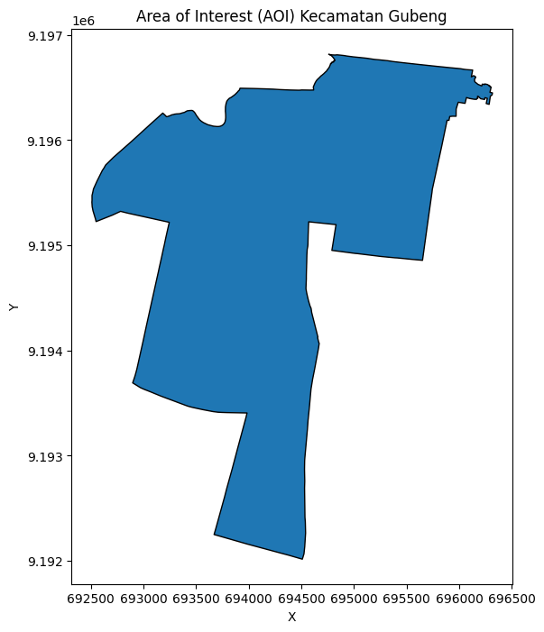
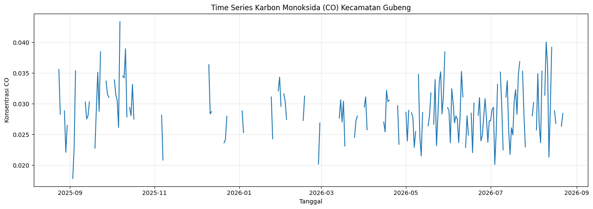
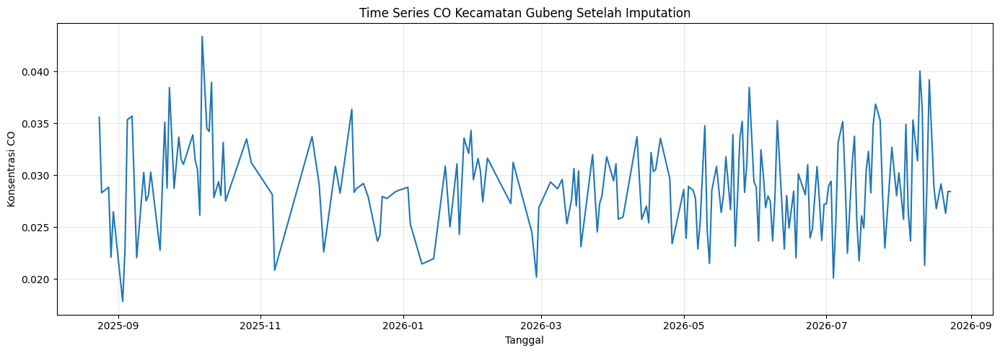
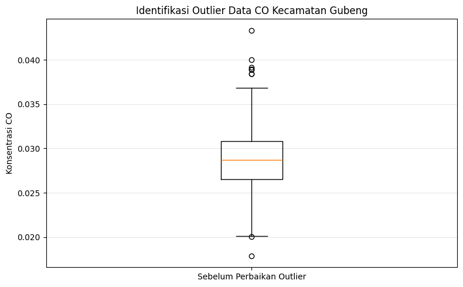
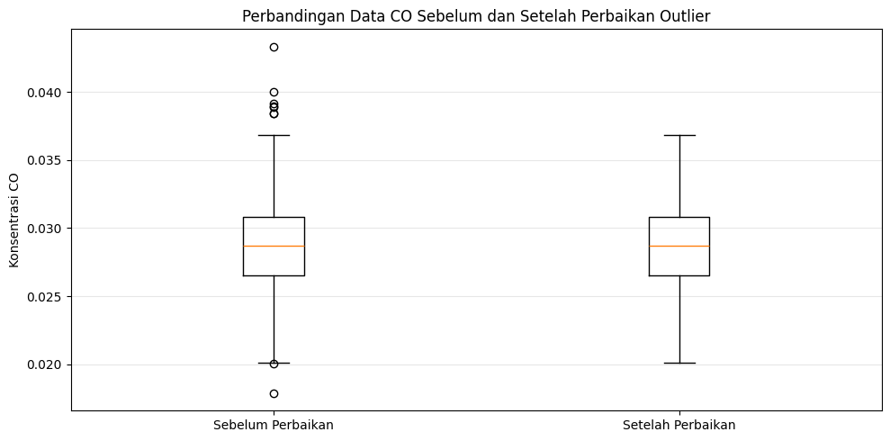
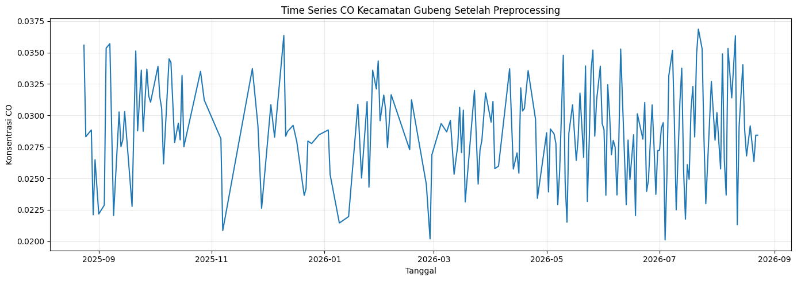
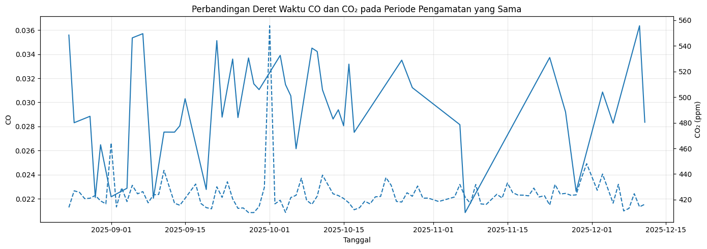

Analisis Time Series Karbon Monoksida (CO) Tingkat Kecamatan di Kota Surabaya Menggunakan TSFEL#
Contents#
Business Understanding
Data Understanding
Menentukan Area of Interest (AOI) Tingkat Kecamatan
Pengambilan Data CO
Eksplorasi Data
Data Preprocessing
Missing Value
Imputation
Identifikasi Outlier
Perbaikan Outlier
Ekstraksi Fitur Menggunakan TSFEL
Analisis 68 Fitur
Analisis Kemiripan CO dan CO₂
Kesimpulan
1. Business Understanding#
Latar Belakang#
Kualitas udara merupakan salah satu aspek penting dalam lingkungan perkotaan. Salah satu polutan yang dapat digunakan untuk mengamati kondisi kualitas udara adalah Karbon Monoksida (CO), yaitu gas yang dihasilkan dari proses pembakaran tidak sempurna.
Pada analisis ini, data CO di wilayah Kota Surabaya akan dianalisis dengan lingkup wilayah yang lebih kecil, yaitu tingkat kecamatan. Data CO selama 365 hari akan melalui proses preprocessing dan selanjutnya digunakan untuk ekstraksi fitur menggunakan Time Series Feature Extraction Library (TSFEL).
Tujuan#
Analisis ini bertujuan untuk:
Mengolah data CO pada tingkat kecamatan di Kota Surabaya selama 365 hari.
Menangani missing value menggunakan teknik imputation.
Mengidentifikasi dan memperbaiki outlier.
Mengekstraksi fitur time series menggunakan TSFEL.
Memahami fitur-fitur yang dihasilkan oleh TSFEL.
2. Data Understanding#
Data yang digunakan berasal dari satelit Sentinel-5P melalui layanan openEO pada Copernicus Data Space Ecosystem. Data mencakup wilayah Kota Surabaya, Jawa Timur, dengan periode pengamatan 24 Agustus 2025 sampai 24 Agustus 2026.
Pada tugas ini, analisis difokuskan pada polutan Karbon Monoksida (CO) dengan lingkup wilayah tingkat kecamatan. Data CO akan diagregasi menjadi data harian dan ditargetkan sebanyak 365 hari untuk selanjutnya digunakan dalam proses preprocessing dan ekstraksi fitur menggunakan TSFEL.
import openeo
print("Library openEO berhasil diimpor.")
Library openEO berhasil diimpor.
connection = openeo.connect(
"https://openeo.dataspace.copernicus.eu"
).authenticate_oidc()
print("Berhasil terhubung ke Copernicus Data Space.")
Authenticated using refresh token.
Berhasil terhubung ke Copernicus Data Space.
3. Menentukan Area of Interest (AOI) Tingkat Kecamatan#
Batas wilayah kecamatan diperoleh dari dataset Peta Batas Administrasi Kecamatan Tahun 2026 yang disediakan oleh Pemerintah Kota Surabaya. Dataset tersebut berisi 31 wilayah kecamatan dalam format Shapefile (SHP).
Pada analisis ini digunakan Kecamatan Gubeng sebagai Area of Interest (AOI). Batas administrasi kecamatan digunakan sebagai wilayah spasial dalam proses pengambilan data Karbon Monoksida (CO) dari Sentinel-5P.
import geopandas as gpd
gdf_kecamatan = gpd.read_file(
r"C:\Users\Alif\ProyekSainsData\data\raw\11032026_batas_kec\11032026_BATAS_KEC.shp"
)
gdf_kecamatan.head()
| OBJECTID_1 | OBJECTID | K | KODE | LUAS_KM | LUAS_HA | Keterangan | Shape_Leng | Shape_Le_1 | Shape_Area | geometry | |
|---|---|---|---|---|---|---|---|---|---|---|---|
| 0 | 1 | 1 | BULAK | 35.78.29 | 6.23632996142359 | 623.632996142359 | Peraturan Walikota Surabaya Nomor 26 Tahun 2023 | 27611.996624 | 27611.996497 | 6.645735e+06 | POLYGON ((696580.441 9202784.509, 696580.458 9... |
| 1 | 2 | 2 | WONOKROMO | 35.78.04 | 8.27681200407028 | 827.681200407028 | Peraturan Walikota Surabaya Nomor 63 Tahun 2022 | 19434.690895 | 19434.690730 | 8.276812e+06 | POLYGON ((692927.102 9193805.435, 692915.698 9... |
| 2 | 3 | 3 | TAMBAKSARI | 35.78.10 | 8.96572590847566 | 896.572590847566 | Peraturan Walikota Surabaya Nomor 63 Tahun 2022 | 18585.703899 | 18585.703957 | 8.965726e+06 | POLYGON ((696506.404 9200045.4, 696503.878 920... |
| 3 | 4 | 4 | GENTENG | 35.78.07 | 4.09193344170742 | 409.193344170742 | Peraturan Walikota Surabaya Nomor 63 Tahun 2022 | 12597.494711 | 12597.494563 | 4.091933e+06 | POLYGON ((693581.28 9198457.402, 693579.957 91... |
| 4 | 5 | 5 | BUBUTAN | 35.78.13 | 3.90599212881899 | 390.599212881899 | Peraturan Walikota Surabaya Nomor 63 Tahun 2022 | 9893.936576 | 9893.936447 | 3.905992e+06 | POLYGON ((691947.224 9198786.6, 691974.783 919... |
aoi_gubeng = gdf_kecamatan[
gdf_kecamatan["K"].str.upper() == "GUBENG"
].copy()
aoi_gubeng
| OBJECTID_1 | OBJECTID | K | KODE | LUAS_KM | LUAS_HA | Keterangan | Shape_Leng | Shape_Le_1 | Shape_Area | geometry | |
|---|---|---|---|---|---|---|---|---|---|---|---|
| 5 | 6 | 6 | GUBENG | 35.78.08 | 7.92909241371792 | 792.909241371792 | Peraturan Walikota Surabaya Nomor 63 Tahun 2022 | 17655.597655 | 17655.597549 | 7.929092e+06 | POLYGON ((694814.169 9196813.503, 694814.429 9... |
import matplotlib.pyplot as plt
aoi_gubeng.plot(
figsize=(8, 8),
edgecolor="black"
)
plt.title("Area of Interest (AOI) Kecamatan Gubeng")
plt.xlabel("X")
plt.ylabel("Y")
plt.show()

aoi_wgs84 = aoi_gubeng.to_crs("EPSG:4326")
aoi = aoi_wgs84.__geo_interface__
4. Pengambilan Data Karbon Monoksida (CO)#
Data Karbon Monoksida (CO) diambil dari koleksi Sentinel-5P L2 menggunakan layanan openEO pada Copernicus Data Space Ecosystem. Periode pengambilan data ditetapkan dari 24 Agustus 2025 sampai 24 Agustus 2026.
Data CO kemudian diagregasi berdasarkan waktu menjadi data harian dan berdasarkan wilayah menggunakan Area of Interest (AOI) Kecamatan Gubeng.
Hasil pengambilan data menunjukkan bahwa tidak seluruh hari dalam periode tersebut memiliki observasi. Data yang tersedia berjumlah 197 hari, dengan observasi terakhir tersedia pada 22 Agustus 2026. Untuk keperluan analisis time series selama 365 hari, rentang tanggal lengkap kemudian dibentuk dan tanggal yang tidak memiliki observasi ditandai sebagai missing value sebelum dilakukan tahap preprocessing.
polutan = "CO"
temporal_extent = [
"2025-08-24",
"2026-08-24"
]
datacube_co = connection.load_collection(
"SENTINEL_5P_L2",
temporal_extent=temporal_extent,
spatial_extent={
"west": aoi_wgs84.total_bounds[0],
"south": aoi_wgs84.total_bounds[1],
"east": aoi_wgs84.total_bounds[2],
"north": aoi_wgs84.total_bounds[3]
},
bands=[polutan]
)
datacube_co = datacube_co.aggregate_temporal_period(
reducer="mean",
period="day"
)
datacube_co = datacube_co.aggregate_spatial(
reducer="mean",
geometries=aoi
)
output_file = "kualitas_udara_CO_Gubeng.nc"
print("Mengeksekusi unduhan data CO...")
datacube_co.execute_batch(
title="Analisis CO Kecamatan Gubeng",
outputfile=output_file
)
print(f"Data CO berhasil disimpan sebagai {output_file}")
Mengeksekusi unduhan data CO...
0:00:00 Job 'j-26091305592545cc8b39d0511df58494': send 'start'
0:00:03 Job 'j-26091305592545cc8b39d0511df58494': queued (progress 0%)
0:00:09 Job 'j-26091305592545cc8b39d0511df58494': queued (progress 0%)
0:00:15 Job 'j-26091305592545cc8b39d0511df58494': queued (progress 0%)
0:00:24 Job 'j-26091305592545cc8b39d0511df58494': queued (progress 0%)
0:00:35 Job 'j-26091305592545cc8b39d0511df58494': queued (progress 0%)
0:00:47 Job 'j-26091305592545cc8b39d0511df58494': running (progress N/A)
0:01:03 Job 'j-26091305592545cc8b39d0511df58494': running (progress N/A)
0:01:23 Job 'j-26091305592545cc8b39d0511df58494': running (progress N/A)
0:01:47 Job 'j-26091305592545cc8b39d0511df58494': running (progress N/A)
0:02:18 Job 'j-26091305592545cc8b39d0511df58494': running (progress N/A)
0:02:55 Job 'j-26091305592545cc8b39d0511df58494': running (progress N/A)
0:03:43 Job 'j-26091305592545cc8b39d0511df58494': finished (progress 100%)
Data CO berhasil disimpan sebagai kualitas_udara_CO_Gubeng.nc
import xarray as xr
import pandas as pd
# Membaca hasil ekstraksi data CO
ds_co = xr.open_dataset(
"ProyekSainsData/data/raw/kualitas_udara_CO_Gubeng.nc"
)
# Menampilkan struktur dataset hasil ekstraksi
ds_co
<xarray.Dataset> Size: 3kB Dimensions: (t: 197, feature: 1) Coordinates:
t (t) datetime64[ns] 2kB 2025-08-24 2025-08-25 … 2026-08-22 lat (feature) float64 8B … lon (feature) float64 8B … feature_names (feature) <U9 36B … Dimensions without coordinates: feature Data variables: CO (feature, t) float64 2kB … Attributes: Conventions: CF-1.8 source: Aggregated timeseries generated by openEO GeoPySpark backend.
# Mengubah hasil NetCDF menjadi DataFrame
df_co_raw = ds_co["CO"].to_dataframe().reset_index()
# Mengambil kolom waktu dan nilai CO
df_co_raw = df_co_raw[["t", "CO"]]
# Mengubah nama dan format tanggal
df_co_raw = df_co_raw.rename(columns={"t": "Tanggal"})
df_co_raw["Tanggal"] = pd.to_datetime(df_co_raw["Tanggal"])
# Mengurutkan data berdasarkan tanggal
df_co_raw = df_co_raw.sort_values("Tanggal")
# Membentuk rentang tanggal lengkap selama 365 hari
tanggal_lengkap = pd.date_range(
start="2025-08-24",
periods=365,
freq="D"
)
# Melengkapi tanggal yang tidak tersedia dengan NaN
df_co = (
df_co_raw
.set_index("Tanggal")
.reindex(tanggal_lengkap)
)
df_co.index.name = "Tanggal"
df_co = df_co.reset_index()
# Menyimpan data hasil persiapan
df_co.to_csv(
"ProyekSainsData/data/processed/kualitas_udara_CO_Gubeng_365hari.csv",
index=False
)
5. Eksplorasi Data#
Eksplorasi data dilakukan untuk memahami karakteristik awal data Karbon Monoksida (CO) sebelum memasuki tahap preprocessing. Eksplorasi mencakup statistik deskriptif dan visualisasi deret waktu untuk melihat pola perubahan nilai CO serta kondisi data yang belum diproses.
df_co[["CO"]].describe()
| CO | |
|---|---|
| count | 197.000000 |
| mean | 0.028914 |
| std | 0.004292 |
| min | 0.017851 |
| 25% | 0.026155 |
| 50% | 0.028623 |
| 75% | 0.031243 |
| max | 0.043366 |
import matplotlib.pyplot as plt
plt.figure(figsize=(14, 5))
plt.plot(
df_co["Tanggal"],
df_co["CO"]
)
plt.title("Time Series Karbon Monoksida (CO) Kecamatan Gubeng")
plt.xlabel("Tanggal")
plt.ylabel("Konsentrasi CO")
plt.grid(True, alpha=0.3)
plt.tight_layout()
plt.show()

ringkasan_missing = pd.DataFrame({
"Kondisi": [
"Data tersedia dari Sentinel-5P",
"Total periode pengamatan",
"Missing value"
],
"Jumlah": [
len(df_co_raw),
len(df_co),
df_co["CO"].isna().sum()
]
})
ringkasan_missing
| Kondisi | Jumlah | |
|---|---|---|
| 0 | Data tersedia dari Sentinel-5P | 197 |
| 1 | Total periode pengamatan | 365 |
| 2 | Missing value | 168 |
6. Data Preprocessing#
Tahap preprocessing dilakukan untuk mempersiapkan data CO sebelum digunakan dalam ekstraksi fitur. Tahapan yang dilakukan meliputi penanganan missing value melalui imputation serta identifikasi dan perbaikan outlier.
6.1 Missing Value dan Imputation#
Missing value pada data CO terjadi karena tidak semua hari dalam periode pengamatan memiliki observasi yang tersedia. Missing value perlu ditangani agar deret waktu memiliki data yang lengkap sebelum dilakukan ekstraksi fitur menggunakan TSFEL.
Pada tahap ini digunakan interpolasi linear untuk memperkirakan nilai CO pada tanggal yang tidak memiliki observasi berdasarkan nilai pada tanggal sebelum dan sesudahnya.
# Membuat salinan data sebelum imputation
df_co_imputed = df_co.copy()
# Imputasi missing value menggunakan interpolasi linear
df_co_imputed["CO"] = (
df_co_imputed["CO"]
.interpolate(method="linear")
.bfill()
.ffill()
)
# Menyimpan hasil imputation
df_co_imputed.to_csv(
"ProyekSainsData/data/processed/kualitas_udara_CO_Gubeng_imputed.csv",
index=False
)
ringkasan_imputation = pd.DataFrame({
"Kondisi": [
"Sebelum Imputation",
"Setelah Imputation"
],
"Missing Value": [
df_co["CO"].isna().sum(),
df_co_imputed["CO"].isna().sum()
]
})
ringkasan_imputation
| Kondisi | Missing Value | |
|---|---|---|
| 0 | Sebelum Imputation | 168 |
| 1 | Setelah Imputation | 0 |
plt.figure(figsize=(14, 5))
plt.plot(
df_co_imputed["Tanggal"],
df_co_imputed["CO"]
)
plt.title("Time Series CO Kecamatan Gubeng Setelah Imputation")
plt.xlabel("Tanggal")
plt.ylabel("Konsentrasi CO")
plt.grid(True, alpha=0.3)
plt.tight_layout()
plt.show()

6.2 Identifikasi Outlier#
Setelah missing value ditangani melalui proses imputation, tahap selanjutnya adalah mengidentifikasi outlier pada data CO. Outlier merupakan nilai yang memiliki perbedaan cukup jauh dibandingkan dengan pola umum data.
Identifikasi outlier dilakukan menggunakan metode Interquartile Range (IQR). Metode ini menggunakan kuartil pertama (Q1) dan kuartil ketiga (Q3) untuk menentukan batas bawah dan batas atas data. Nilai yang berada di luar batas tersebut dikategorikan sebagai outlier.
# Menghitung kuartil dan Interquartile Range (IQR)
Q1 = df_co_imputed["CO"].quantile(0.25)
Q3 = df_co_imputed["CO"].quantile(0.75)
IQR = Q3 - Q1
# Menentukan batas outlier
batas_bawah = Q1 - 1.5 * IQR
batas_atas = Q3 + 1.5 * IQR
# Mengidentifikasi outlier
outlier = (
(df_co_imputed["CO"] < batas_bawah) |
(df_co_imputed["CO"] > batas_atas)
)
# Menyimpan data yang teridentifikasi sebagai outlier
df_outlier = df_co_imputed[outlier].copy()
ringkasan_outlier = pd.DataFrame({
"Keterangan": [
"Q1",
"Q3",
"IQR",
"Batas Bawah",
"Batas Atas",
"Jumlah Outlier"
],
"Nilai": [
Q1,
Q3,
IQR,
batas_bawah,
batas_atas,
len(df_outlier)
]
})
ringkasan_outlier
| Keterangan | Nilai | |
|---|---|---|
| 0 | Q1 | 0.026539 |
| 1 | Q3 | 0.030859 |
| 2 | IQR | 0.004320 |
| 3 | Batas Bawah | 0.020059 |
| 4 | Batas Atas | 0.037338 |
| 5 | Jumlah Outlier | 9.000000 |
plt.figure(figsize=(8, 5))
plt.boxplot(
df_co_imputed["CO"],
tick_labels=["Sebelum Perbaikan Outlier"]
)
plt.title("Identifikasi Outlier Data CO Kecamatan Gubeng")
plt.ylabel("Konsentrasi CO")
plt.grid(axis="y", alpha=0.3)
plt.tight_layout()
plt.show()

6.3 Perbaikan Outlier#
Outlier yang telah teridentifikasi perlu diperbaiki agar tidak memberikan pengaruh yang berlebihan terhadap karakteristik deret waktu dan hasil ekstraksi fitur. Pada tahap ini, nilai yang teridentifikasi sebagai outlier diubah menjadi missing value sementara, kemudian diestimasi kembali menggunakan interpolasi linear berdasarkan nilai CO pada waktu sebelum dan sesudahnya.
Pendekatan ini digunakan agar kontinuitas deret waktu tetap dipertahankan tanpa menghilangkan observasi berdasarkan tanggal.
# Menyalin data hasil imputation
df_co_clean = df_co_imputed.copy()
# Menandai nilai outlier sebagai NaN
df_co_clean.loc[outlier, "CO"] = float("nan")
# Memperbaiki outlier menggunakan interpolasi linear
df_co_clean["CO"] = df_co_clean["CO"].interpolate(
method="linear"
)
# Menangani kemungkinan NaN pada awal atau akhir deret waktu
df_co_clean["CO"] = (
df_co_clean["CO"]
.bfill()
.ffill()
)
# Menyimpan data akhir setelah preprocessing
df_co_clean.to_csv(
"ProyekSainsData/data/processed/kualitas_udara_CO_Gubeng_clean.csv",
index=False
)
ringkasan_perbaikan = pd.DataFrame({
"Kondisi": [
"Sebelum Perbaikan",
"Setelah Perbaikan"
],
"Jumlah Outlier": [
len(df_outlier),
(
(df_co_clean["CO"] < batas_bawah) |
(df_co_clean["CO"] > batas_atas)
).sum()
]
})
ringkasan_perbaikan
| Kondisi | Jumlah Outlier | |
|---|---|---|
| 0 | Sebelum Perbaikan | 9 |
| 1 | Setelah Perbaikan | 0 |
plt.figure(figsize=(10, 5))
plt.boxplot(
[
df_co_imputed["CO"],
df_co_clean["CO"]
],
tick_labels=[
"Sebelum Perbaikan",
"Setelah Perbaikan"
]
)
plt.title("Perbandingan Data CO Sebelum dan Setelah Perbaikan Outlier")
plt.ylabel("Konsentrasi CO")
plt.grid(axis="y", alpha=0.3)
plt.tight_layout()
plt.show()

plt.figure(figsize=(14, 5))
plt.plot(
df_co_clean["Tanggal"],
df_co_clean["CO"]
)
plt.title("Time Series CO Kecamatan Gubeng Setelah Preprocessing")
plt.xlabel("Tanggal")
plt.ylabel("Konsentrasi CO")
plt.grid(True, alpha=0.3)
plt.tight_layout()
plt.show()

7. Ekstraksi Fitur Menggunakan TSFEL#
TSFEL (Time Series Feature Extraction Library) digunakan untuk mengekstraksi karakteristik dari deret waktu Karbon Monoksida (CO) yang telah melalui tahap preprocessing. Ekstraksi fitur digunakan untuk mengubah data deret waktu menjadi representasi numerik berdasarkan karakteristik statistik, temporal, spektral, dan fractal.
7.1 Persiapan dan Konfigurasi Ekstraksi Fitur#
Data CO hasil preprocessing digunakan sebagai sinyal masukan untuk proses ekstraksi fitur. Data memiliki satu observasi per hari sehingga frekuensi sampling ditetapkan sebesar 1 observasi per hari.
Konfigurasi TSFEL kemudian disusun untuk menggunakan 68 jenis fitur yang mencakup fitur statistik, temporal, spektral, dan fractal. Fitur Lempel-Ziv yang secara default tidak aktif diaktifkan agar termasuk dalam daftar fitur yang digunakan. Selain itu, fitur ECDF slope ditambahkan karena fungsi tersebut tersedia dalam TSFEL tetapi tidak terdapat sebagai entri pada konfigurasi fitur default.
# Persiapan data CO untuk ekstraksi fitur
import tsfel
import pandas as pd
import numpy as np
# Mengambil data CO yang telah melalui preprocessing
series_co = df_co_clean["CO"].to_numpy()
# Data memiliki satu observasi setiap hari
fs = 1
print(f"Jumlah data CO: {len(series_co)}")
print(f"Frekuensi sampling: {fs} observasi/hari")
print("\nLima data pertama:")
print(series_co[:5])
Jumlah data CO: 365
Frekuensi sampling: 1 observasi/hari
Lima data pertama:
[0.03558657 0.02831089 0.02848885 0.02866681 0.02884477]
# Membuat konfigurasi TSFEL menggunakan 68 jenis fitur
cfg_68 = tsfel.get_features_by_domain(
["statistical", "temporal", "spectral", "fractal"]
)
# Mengaktifkan Lempel-Ziv complexity
if "Lempel-Ziv complexity" in cfg_68["temporal"]:
cfg_68["temporal"]["Lempel-Ziv complexity"]["use"] = "yes"
# Menambahkan ECDF slope yang tersedia sebagai fungsi TSFEL
# tetapi tidak terdapat pada features.json default
if hasattr(tsfel, "ecdf_slope"):
cfg_68["statistical"]["ECDF slope"] = {
"complexity": "constant",
"description": "Computes the slope of the ECDF between two percentiles.",
"function": "tsfel.ecdf_slope",
"parameters": {
"p_init": 0.5,
"p_end": 0.75
},
"n_features": 1,
"use": "yes"
}
else:
raise AttributeError(
"Fungsi ecdf_slope tidak tersedia pada instalasi TSFEL."
)
# Menghitung jumlah jenis fitur yang aktif
daftar_fitur_68 = []
for domain, fitur_domain in cfg_68.items():
for nama_fitur, pengaturan in fitur_domain.items():
if pengaturan["use"] == "yes":
daftar_fitur_68.append({
"Domain": domain.capitalize(),
"Nama Fitur": nama_fitur
})
df_daftar_fitur_68 = pd.DataFrame(daftar_fitur_68)
df_daftar_fitur_68.insert(
0,
"No",
range(1, len(df_daftar_fitur_68) + 1)
)
jumlah_jenis_fitur = len(df_daftar_fitur_68)
print(f"Jumlah jenis fitur aktif: {jumlah_jenis_fitur}")
display(df_daftar_fitur_68)
if jumlah_jenis_fitur != 68:
raise ValueError(
f"Konfigurasi menghasilkan {jumlah_jenis_fitur} jenis fitur, "
"bukan 68. Periksa konfigurasi TSFEL."
)
Jumlah jenis fitur aktif: 68
| No | Domain | Nama Fitur | |
|---|---|---|---|
| 0 | 1 | Statistical | Absolute energy |
| 1 | 2 | Statistical | Average power |
| 2 | 3 | Statistical | ECDF |
| 3 | 4 | Statistical | ECDF Percentile |
| 4 | 5 | Statistical | ECDF Percentile Count |
| ... | ... | ... | ... |
| 63 | 64 | Fractal | Higuchi fractal dimension |
| 64 | 65 | Fractal | Hurst exponent |
| 65 | 66 | Fractal | Maximum fractal length |
| 66 | 67 | Fractal | Petrosian fractal dimension |
| 67 | 68 | Fractal | Multiscale entropy |
68 rows × 3 columns
7.2 Ekstraksi dan Penyimpanan Hasil#
Setelah konfigurasi 68 jenis fitur terbentuk, proses ekstraksi dilakukan terhadap deret waktu CO yang telah melalui preprocessing. TSFEL menghasilkan representasi numerik dari karakteristik deret waktu berdasarkan konfigurasi yang telah ditentukan.
Hasil ekstraksi kemudian disimpan dalam format CSV agar dapat digunakan pada tahap analisis fitur selanjutnya.
# Ekstraksi 68 jenis fitur TSFEL pada data CO
# Menggunakan fungsi internal TSFEL untuk menghindari masalah
# duplicate column pada proses reindex bawaan.
from tsfel.feature_extraction.calc_features import calc_window_features
features_68_co = calc_window_features(
cfg_68,
series_co,
fs,
single_window=True
)
# Memastikan hasil berbentuk DataFrame
if not isinstance(features_68_co, pd.DataFrame):
features_68_co = pd.DataFrame(features_68_co)
print(f"Jumlah baris hasil ekstraksi: {features_68_co.shape[0]}")
print(f"Jumlah kolom output fitur: {features_68_co.shape[1]}")
display(features_68_co)
Progress: 100% Complete
Jumlah baris hasil ekstraksi: 1
Jumlah kolom output fitur: 164
| 0_Absolute energy | 0_Average power | 0_ECDF_0 | 0_ECDF_1 | 0_ECDF_2 | 0_ECDF_3 | 0_ECDF_4 | 0_ECDF_5 | 0_ECDF_6 | 0_ECDF_7 | ... | 0_Wavelet variance_0.04Hz | 0_Wavelet variance_0.04Hz | 0_Wavelet variance_0.03Hz | 0_Wavelet variance_0.03Hz | 0_Detrended fluctuation analysis | 0_Higuchi fractal dimension | 0_Hurst exponent | 0_Maximum fractal length | 0_Petrosian fractal dimension | 0_Multiscale entropy | |
|---|---|---|---|---|---|---|---|---|---|---|---|---|---|---|---|---|---|---|---|---|---|
| 0 | 0.302971 | 0.000832 | 0.00274 | 0.005479 | 0.008219 | 0.010959 | 0.013699 | 0.016438 | 0.019178 | 0.021918 | ... | 0.000073 | 0.00009 | 0.000109 | 0.000131 | 0.853424 | 1.909033 | 0.754635 | 0.037436 | 1.023776 | 1.209065 |
1 rows × 164 columns
# Pemeriksaan dan perapihan nama kolom hasil ekstraksi
print("=== Pemeriksaan Hasil Ekstraksi TSFEL ===")
print(f"Jumlah jenis fitur yang dikonfigurasi : {jumlah_jenis_fitur}")
print(f"Jumlah output numerik yang dihasilkan : {features_68_co.shape[1]}")
# Mengidentifikasi nama kolom yang duplikat
kolom_duplikat = features_68_co.columns[
features_68_co.columns.duplicated(keep=False)
]
print(f"Jumlah nama kolom duplikat : {len(kolom_duplikat.unique())}")
if len(kolom_duplikat) > 0:
print("\nNama kolom yang duplikat:")
for nama in kolom_duplikat.unique():
print(f"- {nama}")
# Membuat seluruh nama kolom menjadi unik
nama_baru = []
penghitung = {}
for nama in features_68_co.columns:
if nama not in penghitung:
penghitung[nama] = 1
nama_baru.append(nama)
else:
penghitung[nama] += 1
nama_baru.append(
f"{nama}_{penghitung[nama]}"
)
features_68_co.columns = nama_baru
print("\nNama kolom telah dibuat unik.")
else:
print("\nTidak terdapat nama kolom duplikat.")
# Pemeriksaan akhir
jumlah_kolom_duplikat_akhir = (
features_68_co.columns.duplicated().sum()
)
print(f"\nJumlah nama kolom duplikat setelah perapihan: "
f"{jumlah_kolom_duplikat_akhir}")
if jumlah_jenis_fitur == 68:
print("✓ Konfigurasi berhasil menggunakan 68 jenis fitur.")
if jumlah_kolom_duplikat_akhir == 0:
print("✓ Seluruh nama output fitur sekarang unik.")
=== Pemeriksaan Hasil Ekstraksi TSFEL ===
Jumlah jenis fitur yang dikonfigurasi : 68
Jumlah output numerik yang dihasilkan : 164
Jumlah nama kolom duplikat : 8
Nama kolom yang duplikat:
- 0_Wavelet absolute mean_0.04Hz
- 0_Wavelet absolute mean_0.03Hz
- 0_Wavelet energy_0.04Hz
- 0_Wavelet energy_0.03Hz
- 0_Wavelet standard deviation_0.04Hz
- 0_Wavelet standard deviation_0.03Hz
- 0_Wavelet variance_0.04Hz
- 0_Wavelet variance_0.03Hz
Nama kolom telah dibuat unik.
Jumlah nama kolom duplikat setelah perapihan: 0
✓ Konfigurasi berhasil menggunakan 68 jenis fitur.
✓ Seluruh nama output fitur sekarang unik.
# Menyimpan hasil ekstraksi 68 jenis fitur TSFEL
output_fitur_68 = (
"ProyekSainsData/data/processed/"
"fitur_TSFEL_CO_Gubeng_68_fitur.csv"
)
features_68_co.to_csv(
output_fitur_68,
index=False
)
print("Hasil ekstraksi 68 jenis fitur TSFEL berhasil disimpan.")
print(f"Jumlah jenis fitur : {jumlah_jenis_fitur}")
print(f"Jumlah output fitur : {features_68_co.shape[1]}")
print(f"Lokasi file : {output_fitur_68}")
Hasil ekstraksi 68 jenis fitur TSFEL berhasil disimpan.
Jumlah jenis fitur : 68
Jumlah output fitur : 164
Lokasi file : ProyekSainsData/data/processed/fitur_TSFEL_CO_Gubeng_68_fitur.csv
8. Analisis Fitur TSFEL#
Hasil ekstraksi TSFEL selanjutnya dianalisis untuk mengetahui karakteristik deret waktu Karbon Monoksida (CO) pada Kecamatan Gubeng. Analisis menggunakan konfigurasi yang terdiri dari 68 jenis fitur dari berbagai karakteristik deret waktu.
Perlu dibedakan antara jumlah jenis fitur dan jumlah output numerik. Sebanyak 68 jenis fitur digunakan dalam konfigurasi, sedangkan hasil ekstraksi menghasilkan 164 output numerik. Perbedaan jumlah tersebut terjadi karena beberapa jenis fitur menghasilkan lebih dari satu nilai keluaran.
Analisis dilakukan dengan melihat daftar fitur yang digunakan, jumlah output yang dihasilkan, serta nilai masing-masing output fitur pada deret waktu CO setelah preprocessing.
# Ringkasan hasil ekstraksi TSFEL
print("=== Ringkasan Hasil Ekstraksi TSFEL ===")
print(f"Jumlah jenis fitur yang digunakan : {jumlah_jenis_fitur}")
print(f"Jumlah output numerik : {features_68_co.shape[1]}")
print(f"Jumlah data hasil ekstraksi : {features_68_co.shape[0]}")
print("\nJumlah jenis fitur berdasarkan domain:")
ringkasan_domain = (
df_daftar_fitur_68
.groupby("Domain")
.size()
.reset_index(name="Jumlah Jenis Fitur")
)
display(ringkasan_domain)
=== Ringkasan Hasil Ekstraksi TSFEL ===
Jumlah jenis fitur yang digunakan : 68
Jumlah output numerik : 164
Jumlah data hasil ekstraksi : 1
Jumlah jenis fitur berdasarkan domain:
| Domain | Jumlah Jenis Fitur | |
|---|---|---|
| 0 | Fractal | 6 |
| 1 | Spectral | 26 |
| 2 | Statistical | 21 |
| 3 | Temporal | 15 |
# Menampilkan daftar 68 jenis fitur yang digunakan
print("=== Daftar 68 Jenis Fitur TSFEL ===")
display(
df_daftar_fitur_68[
["No", "Domain", "Nama Fitur"]
]
)
=== Daftar 68 Jenis Fitur TSFEL ===
| No | Domain | Nama Fitur | |
|---|---|---|---|
| 0 | 1 | Statistical | Absolute energy |
| 1 | 2 | Statistical | Average power |
| 2 | 3 | Statistical | ECDF |
| 3 | 4 | Statistical | ECDF Percentile |
| 4 | 5 | Statistical | ECDF Percentile Count |
| ... | ... | ... | ... |
| 63 | 64 | Fractal | Higuchi fractal dimension |
| 64 | 65 | Fractal | Hurst exponent |
| 65 | 66 | Fractal | Maximum fractal length |
| 66 | 67 | Fractal | Petrosian fractal dimension |
| 67 | 68 | Fractal | Multiscale entropy |
68 rows × 3 columns
# Menampilkan seluruh output numerik hasil ekstraksi
hasil_fitur_68 = pd.DataFrame({
"Nama Output Fitur": features_68_co.columns,
"Nilai": features_68_co.iloc[0].values
})
hasil_fitur_68.insert(
0,
"No",
range(1, len(hasil_fitur_68) + 1)
)
print("=== Nilai 164 Output Numerik TSFEL ===")
display(hasil_fitur_68)
=== Nilai 164 Output Numerik TSFEL ===
| No | Nama Output Fitur | Nilai | |
|---|---|---|---|
| 0 | 1 | 0_Absolute energy | 0.302971 |
| 1 | 2 | 0_Average power | 0.000832 |
| 2 | 3 | 0_ECDF_0 | 0.002740 |
| 3 | 4 | 0_ECDF_1 | 0.005479 |
| 4 | 5 | 0_ECDF_2 | 0.008219 |
| ... | ... | ... | ... |
| 159 | 160 | 0_Higuchi fractal dimension | 1.909033 |
| 160 | 161 | 0_Hurst exponent | 0.754635 |
| 161 | 162 | 0_Maximum fractal length | 0.037436 |
| 162 | 163 | 0_Petrosian fractal dimension | 1.023776 |
| 163 | 164 | 0_Multiscale entropy | 1.209065 |
164 rows × 3 columns
# Ringkasan nilai output fitur
ringkasan_output = hasil_fitur_68["Nilai"].describe()
print("=== Ringkasan Nilai Output Fitur ===")
display(
ringkasan_output.to_frame(
name="Nilai"
)
)
=== Ringkasan Nilai Output Fitur ===
| Nilai | |
|---|---|
| count | 164.000000 |
| mean | 2.505799 |
| std | 101.826718 |
| min | -1168.806518 |
| 25% | 0.000022 |
| 50% | 0.004695 |
| 75% | 0.449580 |
| max | 364.002006 |
Hasil ekstraksi menunjukkan bahwa sebanyak 68 jenis fitur TSFEL berhasil digunakan pada data deret waktu Karbon Monoksida (CO) Kecamatan Gubeng. Fitur tersebut terdiri dari 21 fitur statistik, 15 fitur temporal, 26 fitur spektral, dan 6 fitur fractal.
Dari 68 jenis fitur tersebut diperoleh 164 output numerik. Jumlah output lebih besar daripada jumlah jenis fitur karena beberapa fitur menghasilkan lebih dari satu nilai keluaran. Hasil tersebut digunakan sebagai representasi numerik dari karakteristik deret waktu CO setelah melalui tahap preprocessing.
Fitur statistik menggambarkan karakteristik nilai dan distribusi sinyal, fitur temporal menggambarkan perubahan sinyal terhadap waktu, fitur spektral menggambarkan karakteristik berdasarkan komponen frekuensi, sedangkan fitur fractal menggambarkan karakteristik kompleksitas dan struktur deret waktu.
9. Analisis Kemiripan CO dan CO₂#
Analisis kemiripan dilakukan untuk membandingkan karakteristik deret waktu Karbon Monoksida (CO) dan Karbon Dioksida (CO₂). Data CO diperoleh dari Sentinel-5P pada Kecamatan Gubeng, sedangkan data CO₂ diperoleh dari hasil pengukuran kualitas udara di Kampus ITS Surabaya.
Karena kedua dataset memiliki periode pengamatan yang berbeda, analisis dilakukan hanya pada tanggal yang tersedia pada kedua dataset. Data CO₂ yang memiliki resolusi pengamatan per menit telah diagregasi menjadi nilai rata-rata harian sehingga memiliki resolusi waktu yang sama dengan data CO.
Setelah kedua dataset diselaraskan berdasarkan tanggal, data yang memiliki nilai lengkap pada kedua parameter digunakan untuk analisis. Selanjutnya, 68 jenis fitur TSFEL diterapkan secara konsisten pada deret waktu CO dan CO₂ untuk memperoleh representasi karakteristik masing-masing deret waktu.
Kemiripan dianalisis melalui visualisasi deret waktu serta perbandingan representasi output fitur TSFEL menggunakan Cosine Similarity dan korelasi Pearson. Hasil analisis digunakan untuk melihat apakah karakteristik deret waktu CO dan CO₂ menunjukkan kemiripan berdasarkan representasi fitur TSFEL pada periode pengamatan yang sama.
9.1 Penyelarasan Data CO dan CO₂#
Data CO dan CO₂ terlebih dahulu diselaraskan berdasarkan tanggal pengamatan. Karena kedua dataset memiliki periode pengamatan yang berbeda, analisis hanya dilakukan pada tanggal yang tersedia pada kedua dataset.
Data CO₂ yang memiliki resolusi pengamatan per menit telah diagregasi menjadi nilai rata-rata harian sehingga memiliki resolusi waktu yang sama dengan data CO. Setelah kedua dataset digabungkan berdasarkan tanggal, baris yang tidak memiliki nilai lengkap pada kedua parameter dihapus.
Hasil penyelarasan menghasilkan 102 hari pengamatan yang dapat digunakan untuk analisis kemiripan.
# Menyelaraskan data CO dan CO₂ berdasarkan tanggal
tanggal_mulai_kemiripan = max(
df_co_clean["Tanggal"].min(),
df_co2_harian["Tanggal"].min()
)
tanggal_akhir_kemiripan = min(
df_co_clean["Tanggal"].max(),
df_co2_harian["Tanggal"].max()
)
# Mengambil data pada periode yang sama
df_co_kemiripan = df_co_clean[
(df_co_clean["Tanggal"] >= tanggal_mulai_kemiripan) &
(df_co_clean["Tanggal"] <= tanggal_akhir_kemiripan)
][["Tanggal", "CO"]].copy()
df_co2_kemiripan = df_co2_harian[
(df_co2_harian["Tanggal"] >= tanggal_mulai_kemiripan) &
(df_co2_harian["Tanggal"] <= tanggal_akhir_kemiripan)
][["Tanggal", "CO2"]].copy()
# Menggabungkan berdasarkan tanggal
df_kemiripan = pd.merge(
df_co_kemiripan,
df_co2_kemiripan,
on="Tanggal",
how="inner"
)
# Menghapus baris yang masih memiliki missing value
df_kemiripan = (
df_kemiripan
.dropna(subset=["CO", "CO2"])
.sort_values("Tanggal")
.reset_index(drop=True)
)
print("=== Periode Analisis Kemiripan ===")
print(
f"Periode: {df_kemiripan['Tanggal'].min().date()} "
f"sampai {df_kemiripan['Tanggal'].max().date()}"
)
print(f"Jumlah hari yang dapat dibandingkan: {len(df_kemiripan)} hari")
display(df_kemiripan.head(10))
=== Periode Analisis Kemiripan ===
Periode: 2025-08-24 sampai 2025-12-11
Jumlah hari yang dapat dibandingkan: 102 hari
| Tanggal | CO | CO2 | |
|---|---|---|---|
| 0 | 2025-08-24 | 0.035587 | 413.960000 |
| 1 | 2025-08-25 | 0.028311 | 426.921569 |
| 2 | 2025-08-26 | 0.028489 | 425.769231 |
| 3 | 2025-08-27 | 0.028667 | 420.801980 |
| 4 | 2025-08-28 | 0.028845 | 421.135417 |
| 5 | 2025-08-29 | 0.022107 | 423.333333 |
| 6 | 2025-08-30 | 0.026482 | 419.062500 |
| 7 | 2025-08-31 | 0.024324 | 416.750000 |
| 8 | 2025-09-01 | 0.022166 | 464.217391 |
| 9 | 2025-09-02 | 0.022403 | 414.345652 |
# Visualisasi perbandingan deret waktu CO dan CO₂
fig, ax1 = plt.subplots(figsize=(14, 5))
ax1.plot(
df_kemiripan["Tanggal"],
df_kemiripan["CO"],
label="CO"
)
ax1.set_xlabel("Tanggal")
ax1.set_ylabel("CO")
ax1.grid(True, alpha=0.3)
ax2 = ax1.twinx()
ax2.plot(
df_kemiripan["Tanggal"],
df_kemiripan["CO2"],
linestyle="--",
label="CO₂"
)
ax2.set_ylabel("CO₂ (ppm)")
plt.title(
"Perbandingan Deret Waktu CO dan CO₂ "
"pada Periode Pengamatan yang Sama"
)
fig.tight_layout()
plt.show()

# Menyiapkan deret waktu CO dan CO₂ untuk ekstraksi fitur
series_co_compare = df_kemiripan["CO"].to_numpy(dtype=float)
series_co2_compare = df_kemiripan["CO2"].to_numpy(dtype=float)
fs_compare = 1
print("=== Persiapan Ekstraksi Fitur untuk Analisis Kemiripan ===")
print(f"Jumlah data CO : {len(series_co_compare)}")
print(f"Jumlah data CO₂ : {len(series_co2_compare)}")
print(f"Frekuensi sampling: {fs_compare} observasi/hari")
if len(series_co_compare) != len(series_co2_compare):
raise ValueError(
"Jumlah titik data CO dan CO₂ tidak sama."
)
=== Persiapan Ekstraksi Fitur untuk Analisis Kemiripan ===
Jumlah data CO : 102
Jumlah data CO₂ : 102
Frekuensi sampling: 1 observasi/hari
9.2 Ekstraksi 68 Fitur TSFEL#
Pada tahap ini, 68 jenis fitur TSFEL diterapkan pada deret waktu CO dan CO₂ yang telah diselaraskan berdasarkan tanggal.
Agar perbandingan fitur dilakukan secara konsisten, data CO dan CO₂ yang digunakan memiliki periode dan jumlah titik pengamatan yang sama, yaitu 102 hari pengamatan yang tersedia pada kedua dataset.
Ekstraksi dilakukan menggunakan satu window yang mencakup seluruh periode pengamatan. Karena beberapa jenis fitur TSFEL dapat menghasilkan lebih dari satu nilai output, jumlah output numerik yang dihasilkan dapat lebih besar daripada jumlah jenis fitur yang digunakan.
# Ekstraksi 68 jenis fitur TSFEL pada data CO₂
import warnings
with warnings.catch_warnings(record=True) as warning_tsfel:
warnings.simplefilter("always")
features_68_co2 = calc_window_features(
cfg_68,
series_co2_compare,
fs_compare,
single_window=True
)
# Memastikan hasil berbentuk DataFrame
if not isinstance(features_68_co2, pd.DataFrame):
features_68_co2 = pd.DataFrame(features_68_co2)
print("=== Hasil Ekstraksi Fitur CO₂ ===")
print(f"Jumlah jenis fitur : {jumlah_jenis_fitur}")
print(f"Jumlah output fitur: {features_68_co2.shape[1]}")
print(f"Jumlah baris : {features_68_co2.shape[0]}")
# Menjelaskan keterbatasan fitur fractal
if warning_tsfel:
print("\nCatatan:")
print(
"Beberapa fitur fractal tidak dapat dihitung karena "
"jumlah data CO₂ yang tersedia kurang dari 160 titik."
)
print(
"Output fitur yang tidak dapat dihitung akan menghasilkan "
"nilai NaN dan tidak digunakan dalam analisis kemiripan."
)
display(features_68_co2)
Progress: 100% Complete
=== Hasil Ekstraksi Fitur CO₂ ===
Jumlah jenis fitur : 68
Jumlah output fitur: 164
Jumlah baris : 1
| 0_Absolute energy | 0_Average power | 0_ECDF_0 | 0_ECDF_1 | 0_ECDF_2 | 0_ECDF_3 | 0_ECDF_4 | 0_ECDF_5 | 0_ECDF_6 | 0_ECDF_7 | ... | 0_Wavelet variance_0.04Hz | 0_Wavelet variance_0.04Hz | 0_Wavelet variance_0.03Hz | 0_Wavelet variance_0.03Hz | 0_Detrended fluctuation analysis | 0_Higuchi fractal dimension | 0_Hurst exponent | 0_Maximum fractal length | 0_Petrosian fractal dimension | 0_Multiscale entropy | |
|---|---|---|---|---|---|---|---|---|---|---|---|---|---|---|---|---|---|---|---|---|---|
| 0 | 1.839738e+07 | 182152.266767 | 0.009804 | 0.019608 | 0.029412 | 0.039216 | 0.04902 | 0.058824 | 0.068627 | 0.078431 | ... | 32192.222416 | 41419.500984 | 50569.653766 | 59283.22873 | NaN | NaN | NaN | NaN | 1.050881 | NaN |
1 rows × 164 columns
# Ekstraksi 68 jenis fitur TSFEL pada data CO
# menggunakan periode pengamatan yang sama dengan CO₂
features_68_co_compare = calc_window_features(
cfg_68,
series_co_compare,
fs_compare,
single_window=True
)
# Memastikan hasil berbentuk DataFrame
if not isinstance(features_68_co_compare, pd.DataFrame):
features_68_co_compare = pd.DataFrame(features_68_co_compare)
print("=== Hasil Ekstraksi Fitur CO ===")
print(f"Jumlah jenis fitur : {jumlah_jenis_fitur}")
print(f"Jumlah output fitur: {features_68_co_compare.shape[1]}")
print(f"Jumlah baris : {features_68_co_compare.shape[0]}")
display(features_68_co_compare)
Progress: 100% Complete
=== Hasil Ekstraksi Fitur CO ===
Jumlah jenis fitur : 68
Jumlah output fitur: 164
Jumlah baris : 1
| 0_Absolute energy | 0_Average power | 0_ECDF_0 | 0_ECDF_1 | 0_ECDF_2 | 0_ECDF_3 | 0_ECDF_4 | 0_ECDF_5 | 0_ECDF_6 | 0_ECDF_7 | ... | 0_Wavelet variance_0.04Hz | 0_Wavelet variance_0.04Hz | 0_Wavelet variance_0.03Hz | 0_Wavelet variance_0.03Hz | 0_Detrended fluctuation analysis | 0_Higuchi fractal dimension | 0_Hurst exponent | 0_Maximum fractal length | 0_Petrosian fractal dimension | 0_Multiscale entropy | |
|---|---|---|---|---|---|---|---|---|---|---|---|---|---|---|---|---|---|---|---|---|---|
| 0 | 0.088638 | 0.000878 | 0.009804 | 0.019608 | 0.029412 | 0.039216 | 0.04902 | 0.058824 | 0.068627 | 0.078431 | ... | 0.00016 | 0.000194 | 0.000232 | 0.000262 | NaN | NaN | NaN | NaN | 1.026231 | NaN |
1 rows × 164 columns
9.3 Pemeriksaan Output Fitur#
Hasil ekstraksi fitur diperiksa untuk mengetahui apakah terdapat output fitur yang menghasilkan nilai NaN pada data CO dan CO₂. Kondisi tersebut dapat terjadi pada beberapa fitur yang memiliki persyaratan jumlah titik data minimum tertentu.
Output fitur yang tidak dapat dihitung pada salah satu parameter tidak digunakan dalam perbandingan. Dengan demikian, analisis kemiripan hanya menggunakan output fitur yang memiliki nilai lengkap pada kedua parameter.
# Pemeriksaan output fitur CO₂ yang tidak dapat dihitung
jumlah_nan_co2 = features_68_co2.isna().sum().sum()
kolom_nan_co2 = features_68_co2.columns[
features_68_co2.isna().any()
]
print("=== Pemeriksaan Missing Value Hasil TSFEL CO₂ ===")
print(f"Jumlah seluruh output fitur : {features_68_co2.shape[1]}")
print(f"Jumlah nilai NaN : {jumlah_nan_co2}")
print(f"Jumlah output yang memiliki NaN: {len(kolom_nan_co2)}")
print("\nOutput fitur yang memiliki NaN:")
for nama in kolom_nan_co2:
print(f"- {nama}")
=== Pemeriksaan Missing Value Hasil TSFEL CO₂ ===
Jumlah seluruh output fitur : 164
Jumlah nilai NaN : 5
Jumlah output yang memiliki NaN: 5
Output fitur yang memiliki NaN:
- 0_Detrended fluctuation analysis
- 0_Higuchi fractal dimension
- 0_Hurst exponent
- 0_Maximum fractal length
- 0_Multiscale entropy
# Menyiapkan output fitur yang valid untuk perbandingan CO dan CO₂
jumlah_output_co = features_68_co_compare.shape[1]
jumlah_output_co2 = features_68_co2.shape[1]
print("=== Pemeriksaan Output Fitur ===")
print(f"Jumlah output fitur CO : {jumlah_output_co}")
print(f"Jumlah output fitur CO₂ : {jumlah_output_co2}")
if jumlah_output_co != jumlah_output_co2:
raise ValueError(
"Jumlah output fitur CO dan CO₂ tidak sama."
)
# Memeriksa output fitur yang memiliki nilai lengkap
valid_co = ~features_68_co_compare.isna().all(axis=0).to_numpy()
valid_co2 = ~features_68_co2.isna().all(axis=0).to_numpy()
# Hanya menggunakan output yang valid pada kedua data
mask_valid = valid_co & valid_co2
kolom_valid = features_68_co_compare.columns[mask_valid]
fitur_co_valid = features_68_co_compare.loc[:, mask_valid].copy()
fitur_co2_valid = features_68_co2.loc[:, mask_valid].copy()
print("\n=== Output Fitur yang Digunakan untuk Perbandingan ===")
print(f"Total output fitur hasil ekstraksi : {jumlah_output_co}")
print(f"Output fitur valid pada kedua data : {len(kolom_valid)}")
print(
f"Output fitur tidak digunakan : "
f"{jumlah_output_co - len(kolom_valid)}"
)
print("\nOutput fitur yang tidak digunakan:")
kolom_tidak_valid = features_68_co_compare.columns[~mask_valid]
for nama in kolom_tidak_valid:
print(f"- {nama}")
print("\nLima output pertama yang digunakan:")
display(
pd.DataFrame({
"No": range(1, min(6, len(kolom_valid) + 1)),
"Nama Output Fitur": kolom_valid[:5]
})
)
=== Pemeriksaan Output Fitur ===
Jumlah output fitur CO : 164
Jumlah output fitur CO₂ : 164
=== Output Fitur yang Digunakan untuk Perbandingan ===
Total output fitur hasil ekstraksi : 164
Output fitur valid pada kedua data : 159
Output fitur tidak digunakan : 5
Output fitur yang tidak digunakan:
- 0_Detrended fluctuation analysis
- 0_Higuchi fractal dimension
- 0_Hurst exponent
- 0_Maximum fractal length
- 0_Multiscale entropy
Lima output pertama yang digunakan:
| No | Nama Output Fitur | |
|---|---|---|
| 0 | 1 | 0_Absolute energy |
| 1 | 2 | 0_Average power |
| 2 | 3 | 0_ECDF_0 |
| 3 | 4 | 0_ECDF_1 |
| 4 | 5 | 0_ECDF_2 |
9.4 Perbandingan Output Fitur CO dan CO₂#
Output fitur dari deret waktu CO dan CO₂ dibandingkan berdasarkan posisi kolom yang sama. Hanya output fitur yang memiliki nilai lengkap pada kedua parameter yang digunakan dalam analisis kemiripan.
Berdasarkan hasil pemeriksaan, terdapat 164 output fitur hasil ekstraksi. Sebanyak 159 output fitur memiliki nilai lengkap pada kedua parameter, sedangkan 5 output fitur tidak digunakan karena menghasilkan nilai NaN pada data CO₂.
# Membandingkan nilai output fitur CO dan CO₂
tabel_perbandingan = pd.DataFrame({
"Nama Output Fitur": kolom_valid,
"CO": fitur_co_valid.iloc[0].to_numpy(),
"CO₂": fitur_co2_valid.iloc[0].to_numpy()
})
print("=== Tabel Perbandingan Output Fitur CO dan CO₂ ===")
print(f"Jumlah output fitur yang dibandingkan: {len(tabel_perbandingan)}")
display(tabel_perbandingan)
=== Tabel Perbandingan Output Fitur CO dan CO₂ ===
Jumlah output fitur yang dibandingkan: 159
| Nama Output Fitur | CO | CO₂ | |
|---|---|---|---|
| 0 | 0_Absolute energy | 0.302971 | 1.839738e+07 |
| 1 | 0_Average power | 0.000832 | 1.821523e+05 |
| 2 | 0_ECDF_0 | 0.002740 | 9.803922e-03 |
| 3 | 0_ECDF_1 | 0.005479 | 1.960784e-02 |
| 4 | 0_ECDF_2 | 0.008219 | 2.941176e-02 |
| ... | ... | ... | ... |
| 154 | 0_Wavelet variance_0.04Hz | 0.000073 | 3.219222e+04 |
| 155 | 0_Wavelet variance_0.04Hz_2 | 0.000090 | 4.141950e+04 |
| 156 | 0_Wavelet variance_0.03Hz | 0.000109 | 5.056965e+04 |
| 157 | 0_Wavelet variance_0.03Hz_2 | 0.000131 | 5.928323e+04 |
| 158 | 0_Petrosian fractal dimension | 1.023776 | 1.050881e+00 |
159 rows × 3 columns
9.5 Cosine Similarity#
Cosine Similarity digunakan untuk mengukur tingkat kemiripan arah antara vektor output fitur CO dan CO₂. Perhitungan dilakukan menggunakan output fitur yang memiliki nilai lengkap pada kedua parameter.
# Menghitung Cosine Similarity antara fitur CO dan CO₂
from sklearn.metrics.pairwise import cosine_similarity
# Mengambil vektor fitur CO dan CO₂
vektor_co = fitur_co_valid.iloc[0].to_numpy(dtype=float)
vektor_co2 = fitur_co2_valid.iloc[0].to_numpy(dtype=float)
# Menghitung cosine similarity
nilai_cosine = cosine_similarity(
vektor_co.reshape(1, -1),
vektor_co2.reshape(1, -1)
)[0, 0]
print("=== Cosine Similarity CO dan CO₂ ===")
print(f"Jumlah output fitur yang digunakan : {len(kolom_valid)}")
print(f"Nilai Cosine Similarity : {nilai_cosine:.6f}")
=== Cosine Similarity CO dan CO₂ ===
Jumlah output fitur yang digunakan : 159
Nilai Cosine Similarity : 0.018474
Interpretasi
Nilai Cosine Similarity yang diperoleh adalah 0.018474. Nilai tersebut sangat dekat dengan 0 sehingga menunjukkan bahwa arah vektor karakteristik yang direpresentasikan oleh output fitur CO dan CO₂ memiliki tingkat kemiripan yang sangat rendah.
Hasil ini menunjukkan bahwa berdasarkan representasi fitur TSFEL, karakteristik CO dan CO₂ pada periode pengamatan yang sama tidak memiliki kemiripan arah vektor yang kuat.
9.6 Korelasi Pearson#
Selain Cosine Similarity, korelasi Pearson digunakan untuk mengukur hubungan linear antara output fitur CO dan CO₂. Nilai korelasi Pearson berada pada rentang -1 sampai 1, dengan nilai positif menunjukkan hubungan searah dan nilai negatif menunjukkan hubungan berlawanan arah.
Perhitungan dilakukan menggunakan 159 output fitur yang memiliki nilai lengkap pada kedua parameter.
# Menghitung korelasi Pearson antara output fitur CO dan CO₂
from scipy.stats import pearsonr
# Mengambil nilai fitur yang valid pada kedua data
x = fitur_co_valid.iloc[0].to_numpy(dtype=float)
y = fitur_co2_valid.iloc[0].to_numpy(dtype=float)
# Menghitung korelasi Pearson
nilai_korelasi, nilai_p = pearsonr(x, y)
print("=== Korelasi Pearson Fitur CO dan CO₂ ===")
print(f"Jumlah output fitur yang digunakan : {len(kolom_valid)}")
print(f"Nilai Korelasi Pearson : {nilai_korelasi:.6f}")
print(f"Nilai p-value : {nilai_p:.6f}")
=== Korelasi Pearson Fitur CO dan CO₂ ===
Jumlah output fitur yang digunakan : 159
Nilai Korelasi Pearson : 0.008837
Nilai p-value : 0.911976
Interpretasi
Nilai korelasi Pearson yang diperoleh adalah 0.008837. Nilai tersebut sangat dekat dengan 0 sehingga menunjukkan bahwa hubungan linear antara output fitur CO dan CO₂ sangat lemah.
Nilai p-value yang diperoleh adalah 0.911976. Karena nilai p-value lebih besar dari 0.05, tidak terdapat bukti yang cukup untuk menyatakan adanya hubungan linear yang signifikan antara output fitur CO dan CO₂ pada tingkat signifikansi 5%.
Dengan demikian, berdasarkan 159 output fitur TSFEL yang memiliki nilai lengkap pada kedua parameter, CO dan CO₂ tidak menunjukkan hubungan linear yang signifikan pada periode pengamatan yang sama.
9.7 Kesimpulan Analisis Kemiripan#
Berdasarkan hasil analisis menggunakan 159 output fitur TSFEL yang memiliki nilai lengkap pada kedua parameter, diperoleh nilai Cosine Similarity sebesar 0.018474. Nilai tersebut sangat dekat dengan 0 sehingga menunjukkan bahwa arah vektor karakteristik CO dan CO₂ memiliki tingkat kemiripan yang sangat rendah.
Hasil analisis korelasi Pearson menunjukkan nilai sebesar 0.008837 dengan p-value sebesar 0.911976. Nilai korelasi yang sangat dekat dengan 0 menunjukkan bahwa hubungan linear antara output fitur CO dan CO₂ sangat lemah. Selain itu, nilai p-value yang lebih besar dari 0.05 menunjukkan bahwa tidak terdapat hubungan linear yang signifikan secara statistik pada tingkat signifikansi 5%.
Dengan demikian, berdasarkan representasi 68 jenis fitur TSFEL dan 159 output fitur yang memiliki nilai lengkap, karakteristik deret waktu CO dan CO₂ pada periode pengamatan yang sama tidak menunjukkan kemiripan yang kuat maupun hubungan linear yang signifikan.
10. Kesimpulan#
Analisis data kualitas udara dilakukan terhadap Karbon Monoksida (CO) pada Kecamatan Gubeng, Kota Surabaya menggunakan data Sentinel-5P. Tahapan analisis meliputi pemahaman data, penentuan Area of Interest (AOI), pengambilan data, eksplorasi data, preprocessing, ekstraksi fitur menggunakan TSFEL, serta analisis kemiripan antara CO dan CO₂.
Pada tahap preprocessing, data CO diperiksa terhadap missing value dan outlier. Missing value ditangani menggunakan interpolasi linear yang dilengkapi dengan backward fill dan forward fill. Identifikasi outlier dilakukan menggunakan metode Interquartile Range (IQR), kemudian nilai outlier diperbaiki menggunakan interpolasi sehingga diperoleh deret waktu CO yang telah melalui proses pembersihan data.
Ekstraksi fitur menggunakan TSFEL dilakukan dengan 68 jenis fitur untuk memperoleh representasi karakteristik deret waktu CO. Hasil ekstraksi menghasilkan 164 output numerik karena beberapa jenis fitur dapat menghasilkan lebih dari satu output. Pendekatan yang sama diterapkan pada data CO₂ untuk memperoleh representasi fitur yang dapat dibandingkan.
Analisis kemiripan dilakukan pada periode ketika data CO dan CO₂ tersedia secara bersamaan. Data CO₂ yang memiliki resolusi pengamatan per menit diagregasi menjadi nilai rata-rata harian sehingga memiliki resolusi waktu yang sama dengan data CO. Setelah penyelarasan berdasarkan tanggal, diperoleh 102 hari pengamatan yang dapat dibandingkan.
Dari 68 jenis fitur TSFEL diperoleh 164 output numerik. Sebanyak 159 output fitur memiliki nilai lengkap pada kedua parameter dan digunakan dalam analisis kemiripan, sedangkan 5 output fitur tidak digunakan karena tidak dapat dihitung pada data CO₂ akibat keterbatasan jumlah titik data yang memenuhi persyaratan fitur tersebut.
Hasil Cosine Similarity antara vektor fitur CO dan CO₂ sebesar 0.018474. Nilai tersebut sangat dekat dengan 0 sehingga menunjukkan bahwa arah vektor karakteristik CO dan CO₂ memiliki tingkat kemiripan yang sangat rendah. Sementara itu, korelasi Pearson menghasilkan nilai sebesar 0.008837 dengan p-value sebesar 0.911976. Nilai korelasi yang sangat dekat dengan 0 menunjukkan hubungan linear yang sangat lemah, sedangkan p-value yang lebih besar dari 0.05 menunjukkan bahwa hubungan tersebut tidak signifikan secara statistik pada tingkat signifikansi 5%.
Berdasarkan keseluruhan hasil analisis, karakteristik deret waktu CO dan CO₂ pada periode pengamatan yang sama tidak menunjukkan kemiripan yang kuat berdasarkan representasi fitur TSFEL serta tidak menunjukkan hubungan linear yang signifikan secara statistik.